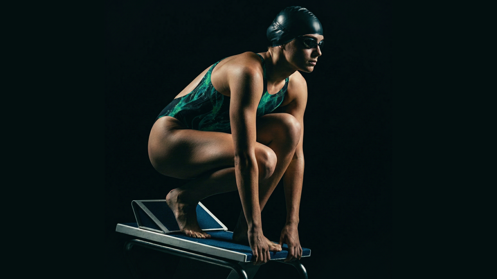
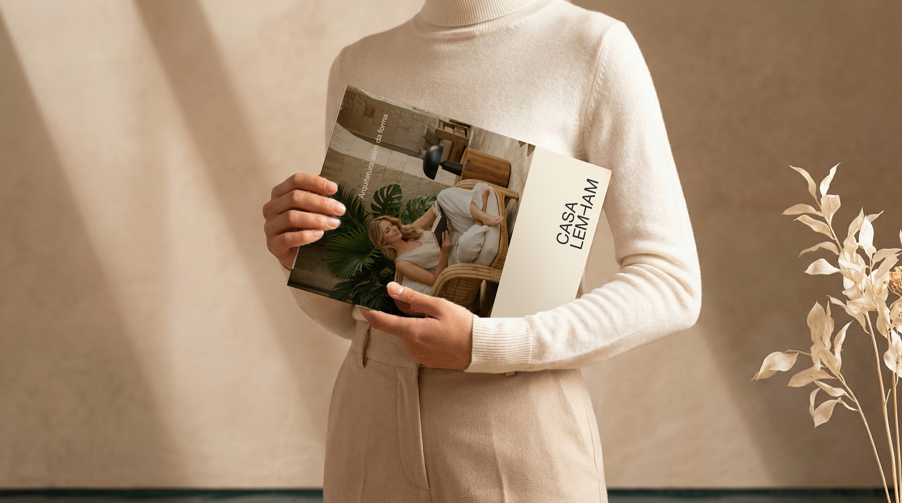
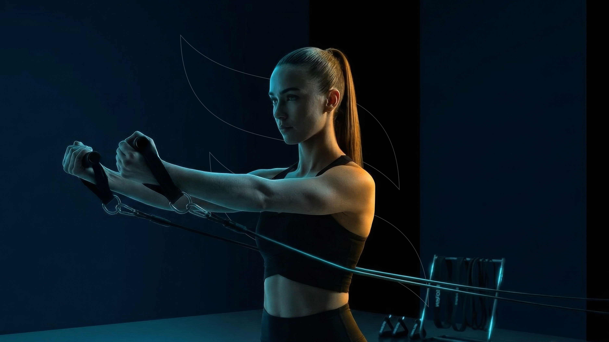
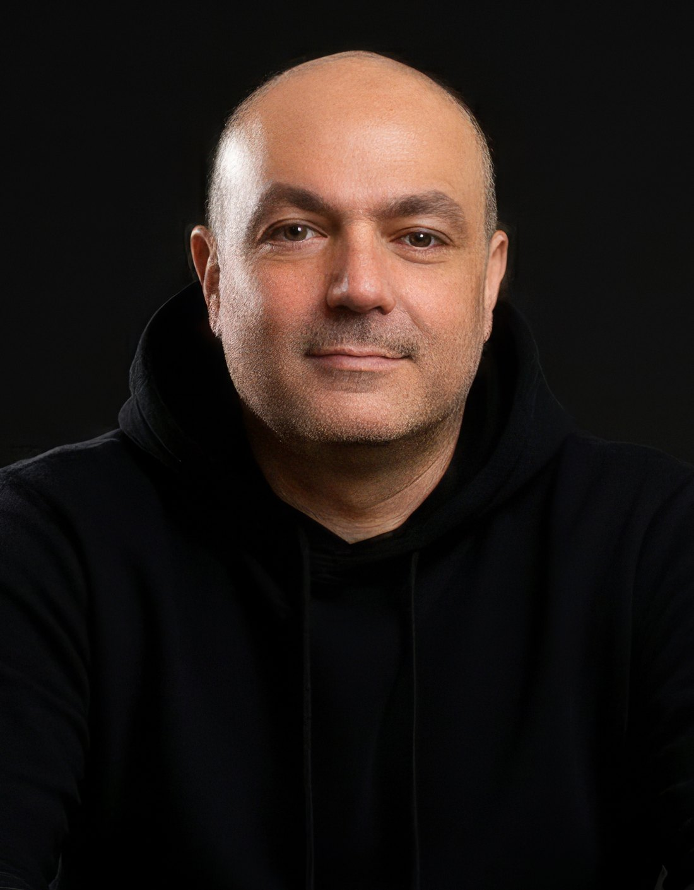

Negócio muda todo dia. Marca muda de tempos em tempos. Essa distância é normal, e chega uma hora em que ela começa a aparecer para o mercado antes de aparecer para você.
A Rooker fecha essa distância. Não com atualização estética. Com construção fundamentada.
Setores diferentes, portes diferentes, o mesmo método. Cada projeto começou por uma conversa sobre o negócio, não por um pedido de identidade visual.
Ver todos os projetos


Quatro caminhos, conforme o momento do negócio.
Quatro fases, sempre nessa ordem.
Diagnóstico do negócio antes de qualquer proposta visual.
Posicionamento e as decisões que sustentam tudo que vem depois.
Identidade visual e verbal construída a partir da decisão.
Manual, arquivos e o porquê de cada escolha.

Vinte e quatro anos na área criativa, entre agências e estúdios, com passagem por estúdio internacional atendendo marcas globais. Marca é onde esse caminho chegou, não onde ele começou. O critério estético e o método que a Rooker aplica vêm dessa trajetória, e chegam a projetos que normalmente não teriam acesso a esse nível.
O cliente não recebe um arquivo. Recebe a decisão e o porquê. Cada escolha tem fundamento explicável, de uma cor a um espaçamento. Estética o mercado tem de sobra. Argumento, não.
Conhecer a RookerO critério vem de estúdio internacional atendendo marcas globais, aplicado
a projetos que normalmente não teriam acesso a esse nível.
Quem diagnostica é quem entrega.
O fundador conduz cada projeto do início ao fim.
Toda proposta abre com o que a Rooker entendeu do seu negócio.
Você vê pensamento antes de ver preço.
Cada decisão é tomada pensando no negócio que você
vai ter, não na tendência que vai passar.
Cada projeto começa por uma conversa. Sem compromisso e sem orçamento na primeira linha. O objetivo dela é entender onde seu negócio está e se faz sentido seguir juntos.